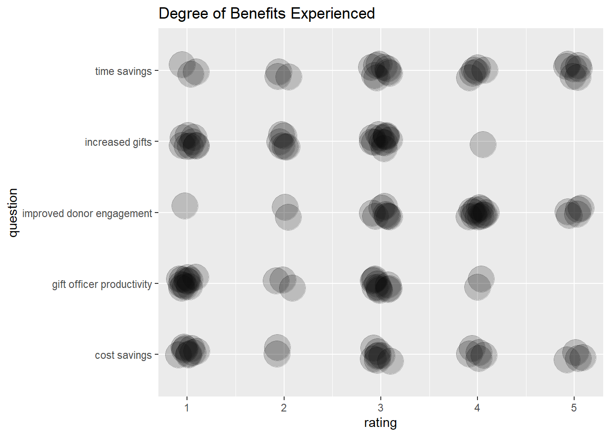
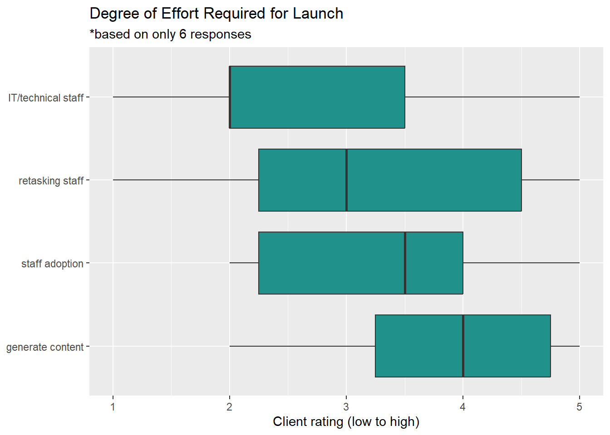

Code
library(tidyverse)
library(viridis)
library(readxl)
library(summarytools)
knitr::opts_chunk$set(echo = TRUE)library(tidyverse)
library(viridis)
library(readxl)
library(summarytools)
knitr::opts_chunk$set(echo = TRUE)A software company has gathered qualitative and quantitative feedback from 24 client organizations using three surveys at different stages of the client relationship: purchase decision, launch, and early results. At most, three individual people from each institution has responded to at least one survey, two people responded to two surveys, and no one person responded to all three surveys. Given the small sample size of only 31 respondents across the 3 surveys, and given the overlap in feedback across the three surveys, this analysis will combine all available data into a single set for an initial analysis. At the outset, it should be noted that the conclusions drawn from this data will be limited due to the small sample size. The value of this analysis, therefore, aims to find strong trends and to determine what changes, if any, to the surveys would yield more business intelligence.
The data has been sanitized to protect the privacy of those involved. Client email addresses are replaced with a new variable, UserID, where the letter corresponds to an organization and the number corresponds to the respondent from that organization. To illustrate, R1, R2, R3 are three different people from the same organization. This will allow analysis of individuals and organization-based feedback.
Since there is some overlap in organizations, respondents, and questions across the three surveys, the first step will be a full_join, with a calculation of x/2 to align the 10-point ratings with the 5-point ratings. A full join will allow analysis of as much data as possible, while requiring careful handling of NA values.
# assign x/2 function
mydivide <- function(x){x/2}
# read in each sheet--is there a way to do this in one step?
survey1_orig <- read_xlsx("_data/ClientSurveys.xlsx", sheet =1)
survey2_orig <- read_xlsx("_data/ClientSurveys.xlsx", sheet =2) %>%
mutate(across(starts_with("How would"), funs(mydivide)),
.keep = "unused")
survey3_orig <- read_xlsx("_data/ClientSurveys.xlsx", sheet =3) %>%
mutate(across(starts_with(c("How", "Overall")), funs(mydivide)),
.keep = "unused")
# full join to keep all data, key = UserID
joinedsurveys_orig <- survey2_orig %>%
full_join(x = survey2_orig, y=survey1_orig, by = "UserID") %>%
full_join(survey3_orig, by = "UserID")As with most surveys, the questions are too long for column names, so each is renamed with the simplest phrasing possible. The new names contain prefixes and suffixes that will help with sorting later. The full text of each question is listed in the APPENDIX.
# look at colnames to rename them
# colnames(joinedsurveys_orig)
# assign clean data frame
surveys_renamed <- joinedsurveys_orig
#rename columns
colnames(surveys_renamed) <- c("Timestamp1",
"UserID",
"delete",
"delete2",
"q_prompted_adoption",
"q_goal_constituents",
"qlauncheffort_staffrolestime",
"qr_launcheffort_retaskstaff",
"qr_launcheffort_generatecontent",
"qr_launcheffort_techIT",
"qr_launcheffort_staffadoption",
"qlauncheffort_detail",
"qr_benefit_donorengagement",
"qr_benefit_increasedgifts",
"qr_benefit_costsavings",
"qr_benefit_timesavings",
"qr_benefit_GOproductivity",
"qbenefit_detail",
"q_donorcommsbefore",
"q_process_content",
"qdonor_relationship",
"qdonor_interaction",
"qdonor_response",
"qdonor_analytics",
"q_team_analytics",
"qr_implementationsupport",
"q_support_detail",
"q_Olacking",
"q_biggest_success",
"q_reality_vs_expectations",
"q_client_advice",
"q_Oimprove",
"Timestamp2",
"q_prompted_adoption",
"q_choice_over_competitors",
"q_feature_detail",
"qr_benefit_donorengagement",
"qr_benefit_increasedgifts",
"qr_benefit_costsavings",
"qr_benefit_timesavings",
"qr_benefit_GOproductivity",
"q_choice_factors",
"Timestamp3",
"qr_onboard_overall",
"qonboard_lacking",
"qonboard_lacking_detail",
"qonboard_wentwell",
"qonboard_wentwell_detail",
"qr_onboard_communication",
"qonboard_communication_detail",
"qr_onboard_interpretneeds",
"qonboard_interpretneeds_detail",
"delete3")
#view new column names
#colnames(surveys_renamed)After renaming, pivoting and grouping is used to combine the repeated questions into the same variable. For instance, surveys 1 and 2 both ask, “XXXXX?” and this step gets those responses into the same column while maintaining the distinct timestamps and UserIDs for those responses.
# combine repeated questions
deduped_questions <- surveys_renamed %>%
pivot_longer(cols = (starts_with("q")),
names_to = "question",
values_to = "response",
values_transform = list(response = as.character),
values_drop_na = TRUE) %>%
group_by(question) %>%
pivot_wider(names_from = "question",
names_sort = TRUE,
values_from = "response")
# confirmed reduction in columns and same number of rowsWith the names abbreviated and the repeated questions regrouped, further cleaning can be done. First, the columns are sorted alphabetically to make use of the naming conventions. Two unneeded questions about sizing and shipping for a gift are removed as well as one row with test data. Various spellings of “n/a”, “N/A”, and “???” are mutated to NA values. The fields that had been mutated from numeric to character for the pivot are converted back to numeric values, and then those numeric columns are moved to the front of the data set after UserID.
The result is a tidy data set where each of 31 respondents and all of their responses are on the same row, with the UserID and 44 variables organized into separate columns for analysis.
# cleaning steps
surveys_clean <- deduped_questions %>%
# alpha-order columns
select(order(colnames(deduped_questions))) %>%
# remove deletes
select(-starts_with("delete")) %>%
# remove test row, should get 31 x 45
filter(is.na(q_goal_constituents) | q_goal_constituents != "test") %>%
#deal with NAs
mutate(across(where(is.character), ~na_if(.,"n/a"))) %>%
mutate(across(where(is.character), ~na_if(.,"N/A"))) %>%
mutate(across(where(is.character), ~na_if(.,"N/a"))) %>%
mutate(across(where(is.character), ~na_if(.,"???"))) %>%
# group
group_by(sort("UserID")) %>%
# arrange by client
arrange("UserID") %>%
#convert back to numeric
mutate(across(starts_with("qr"), ~as.numeric(.))) %>%
# move numeric values to front
relocate(where(is.numeric)) %>%
# bring UserID to the leftmost
relocate("UserID")With a richer data set, it’s possible that significant correlations could be found between client characteristics and the feedback they give, such as length of time with the software, staff size, usage categories, etc. However, this analysis seeks to identify broad trends across aspects of performance and the effort required to implement the software, and so the primary focus will be on those performance and effort variables rather than trends among organizations or respondents.
A total of XX questions asked respondents to rate feedback on a scale of 1-5 (as noted in XX, those on a scale of 1-10 were recalculated). A simple boxplot with a point overlay of individual ratings gives a general idea of the quantitative data. A “jitter” on the geom_point helps make it easier to see how many responses and generally where they were.
In the plot below, the range and density of responses are easy to see. With this view, it is clear that only one person responded to the “interpret needs” question, about 5-6 responded to “launch effort” questions, and a much larger sample responded to “benefit” questions. The one person who responded regarding how well the software company interpreted their needs during set (XX check question wording) responded with the most positive possible rating. The launch effort and benefit questions require further plotting to analyze, as neither tells a clear story from this noisy plot.
# arrange as question = observation, 10 x 29
ratings <- surveys_clean %>%
ungroup() %>%
select(starts_with("qr") | "UserID") %>%
pivot_longer(cols = starts_with("qr"),
names_to = "question",
values_to = "rating",
values_drop_na = TRUE) %>%
pivot_wider(names_from = "UserID",
values_from = "rating")
# arrange as response = observation, 165 x 3
ratings2 <- surveys_clean %>%
ungroup() %>%
select(starts_with("qr") | "UserID") %>%
pivot_longer(cols = starts_with("qr"),
names_to = "question",
values_to = "rating",
values_drop_na = TRUE)
# boxplot with jitter point
ratings2 %>%
ggplot(aes(question, rating)) +
geom_boxplot(fill = "#fde725") +
coord_flip() +
geom_point(alpha = .4,
size = .2,
position = "jitter")
What is the best way to see what benefits are being most realized for clients?
# filter for only benefits questions
benefits <- ratings %>%
filter(str_detect(question, "qr_benefit"))
#set up benefits data
benefits2 <- surveys_clean %>%
ungroup() %>%
select(starts_with("qr_ben") | "UserID") %>%
rename("cost savings" = "qr_benefit_costsavings",
"improved donor engagement" = "qr_benefit_donorengagement",
"gift officer productivity" = "qr_benefit_GOproductivity",
"increased gifts" = "qr_benefit_increasedgifts",
"time savings" = "qr_benefit_timesavings") %>%
pivot_longer(cols = !UserID,
names_to = "question",
values_to = "rating",
values_drop_na = TRUE) #try geom_jtter
benefits2 %>%
arrange() %>%
ggplot(aes(question, rating)) +
geom_jitter(width = .1,
height = .1,
alpha = .2,
size = 10,) +
coord_flip() +
labs(title = "Degree of Benefits Experienced")
# unuseful count of ratings overall
benefits2 %>%
group_by(question) %>%
ggplot(aes(rating, group = question, fill = question)) +
geom_density(alpha = .5) +
facet_wrap("question")
# boxplot
benefits2 %>%
group_by(question) %>%
arrange(mean(rating)) %>%
ggplot(aes(rating, question )) +
geom_boxplot(fill = "#5ec962") +
scale_y_discrete(limits = c("gift officer productivity", "increased gifts", "cost savings", "time savings", "improved donor engagement")) +
labs(title = "Degree of Product Benefits Experienced", x = "Client Rating (low to high)" , y = NULL)
From this boxplot, arranged by decreasing means top to bottom, it is clear that improved donor engagement and time savings are the benefits most strongly reported. Cost savings has the broadest span with a mean in the center of the rating options. Both increased gifts and gift officer productivity are on the lower end of benefits experienced, since both have means greater than the minimum rating, it is safe to interpret that these benefits have been seen to some degree. It is notable that cost savings, increased gifts, and gift officer productivity all have significant responses at the minimum rating; the software company should pay attention to those who are reporting none of these benefits.
Notably, one qualitative question on the survey regarding internal staff metrics (nearly synonymous with gift officer productivity), all four respondents to that free text question indicated they had not looked at the internal analytics. Therefore, it is possible that these benefits may be going unnoticed. The software company may wish to increase attention to that feature. It should be noted that no person gave feedback on both the gift officer productivity rating AND the internal analytics question. Nonetheless, the strong trends of each group indicate a possible gap that the software company should note.
#set up launch data
launch <- surveys_clean %>%
ungroup() %>%
select(starts_with("qr_launch") | "UserID") %>%
rename("generate content" = "qr_launcheffort_generatecontent",
"retasking staff" = "qr_launcheffort_retaskstaff",
"staff adoption" = "qr_launcheffort_staffadoption",
"IT/technical staff" = "qr_launcheffort_techIT"
) %>%
pivot_longer(cols = !UserID,
names_to = "question",
values_to = "rating",
values_drop_na = TRUE)
# plot on boxplot, in increasing order
launch %>%
arrange() %>%
ggplot(aes(question, rating)) +
geom_boxplot(fill = "#21918c") +
coord_flip() +
scale_x_discrete(limits = c("generate content" , "staff adoption" , "retasking staff" , "IT/technical staff")) +
labs(title = "Degree of Effort Required for Launch",
subtitle = "*based on only 6 responses",
y = "Client rating (low to high)",
x = NULL)
# avgratings <- surveys_clean %>%
# summarize(across(mean))
#
# avgratings <- ratings %>%
# pivot_wider %>%
# summarize(across(mean(rating))) %>%
#
# avgratings %>%
# ggplot(aes(question, mean(rating))) +
# geom_point()+
# theme(axis.text.x = element_text(angle = 30))
#
# ratings %>%
# group_by(question) %>%
# ggplot(aes(question, mean(question)),
# color = "rating") +
# geom_bar() +
# coord_flip()
# Leah's code
# isotopes <- isotope_csv %>%
# pivot_longer(cols = everything(),
# names_to = c(".value", "set"),
# names_pattern = "(.+)_(.)")Word cloud to illustrate client concerns turn selection questions into tidy data
# [1] "Timestamp.x"
# [2] "UserID"
# [3] "What size sweatshirt would you like (we are out of mediums, sorry!)?.x"
# renamed: delete
# [4] "What address should we ship the sweatshirt to?.x"
# renamed: delete
# [5] "What prompted your adoption of O?.x"
# renamed:prompted_adoption
# [6] "What is your annual fundraising goal, and how many constituents do you reach out to with O?.x"
# renamed:goal_constituents
# [7] "Outside of your user base, how many individuals support processes within O and what are their individual roles? If possible, please estimate what percentage of their time is O focused..x"
# renamed: launcheffort_staffrolestime
# [8] "Please indicate the scale of effort required for launching the various aspects of O (1 = Low level of effort; 5 = High level of effort). [Retasking of staff].x"
# renamed: launcheffort_retaskstaff
# [9] "Please indicate the scale of effort required for launching the various aspects of O (1 = Low level of effort; 5 = High level of effort). [Generating content].x"
# renamed: launcheffort_generatecontent
# [10] "Please indicate the scale of effort required for launching the various aspects of O (1 = Low level of effort; 5 = High level of effort). [Tech/Interface with IT].x"
# renamed: launcheffort_techIT
# [11] "Please indicate the scale of effort required for launching the various aspects of O (1 = Low level of effort; 5 = High level of effort). [Challenges with staff adoption and comfort].x"
# renamed: launcheffort_staffadoption
# [12] "Please add any comments or details that would help us understand your ratings better....12.x"
# renamed: launcheffort_detail
# [13] "Please indicate the degree to which you have experienced the following benefits from O (1 = To a small degree; 5 = To a great degree). [Improved number or quality of donor engagement touches (whether measured or anecdotal)].x"
# renamed: benefit_donorengagement
# [14] "Please indicate the degree to which you have experienced the following benefits from O (1 = To a small degree; 5 = To a great degree). [Increase in financial contributions].x"
# renamed: benefit_increasedgifts
# [15] "Please indicate the degree to which you have experienced the following benefits from O (1 = To a small degree; 5 = To a great degree). [Cost savings].x"
# renamed: benefit_costsavings
# [16] "Please indicate the degree to which you have experienced the following benefits from O (1 = To a small degree; 5 = To a great degree). [Time savings].x"
# renamed: benefit_timesavings
# [17] "Please indicate the degree to which you have experienced the following benefits from O (1 = To a small degree; 5 = To a great degree). [Increased gift officer productivity].x"
# renamed: benefit_GOproductivity
# [18] "Please add any comments or details that would help us understand your ratings better....18.x"
# renamed: benefit_detail
# [19] "How did you manage philanthropic communications before O?.x"
# renamed: donor_commsbefore
# [20] "What is your process for developing content, and how do you know what content to feed to each donor as you’re personalizing sites/reports? To what extent is this decided/produced by gift officers versus other team members?.x"
# renamed: process_content
# [21] "What challenges of donor relationship-building is O helping to solve for you?.x"
# renamed: donor_relationship
# [22] "How has O changed, facilitated, or limited your interaction with donors?.x"
# renamed: donor_interaction
# [23] "What has been the donor response to hyper-personalized communications?.x"
# renamed: donor_response
# [24] "What have you learned from looking at the end-donor use data O provides?.x"
# renamed: donor_analytics
# [25] "What have you learned about your internal team through the aggregate analytics module?.x"
# renamed: team_analytics
# [26] "How would you rate SA/O’s implementation and support?.x"
# renamed: rateO_implementationsupport
# [27] "Is there anything you would like to expand upon regarding your selection above?.x"
# renamed: rateO_support_detail
# [28] "What could have been handled better?.x"
# renamed: O_lacking
# [29] "What is the biggest O-facilitated success your organization can point to (either with an individual donor relationship or in the aggregate)?.x"
# renamed: biggest_success
# [30] "How was the reality of O different from your expectations (both positive and negative)?.x"
# renamed: reality_vs_expectations
# [31] "What advice would you have for future O users?.x"
# renamed: client_advice
# [32] "How can O improve (in big and small ways)? Your complete candor would be much appreciated..x"
# renamed: O_improve
# [33] "Timestamp.y"
# renamed: reorder to beginning
# [34] "What prompted your adoption of O?.y"
# renamed: prompted_adoption2
# [35] "Why did you choose O over other platforms you were exploring?"
# renamed: O_over_competitors
# [36] "If \"unique product features\" was selected in the above question, can you please elaborate?"
# renamed: feature_detail
# [37] "Please indicate the degree to which you have experienced the following benefits from O (1 = To a small degree; 5 = To a great degree). [Improved number or quality of donor engagement touches (whether measured or anecdotal)].y"
# renamed: benefit_donorengagement2
# [38] "Please indicate the degree to which you have experienced the following benefits from O (1 = To a small degree; 5 = To a great degree). [Increase in financial contributions].y"
# renamed: benefit_increasedgifts2
# [39] "Please indicate the degree to which you have experienced the following benefits from O (1 = To a small degree; 5 = To a great degree). [Cost savings].y"
# renamed: benefit_costsavings2
# [40] "Please indicate the degree to which you have experienced the following benefits from O (1 = To a small degree; 5 = To a great degree). [Time savings].y"
# renamed: benefit_timesavings2
# [41] "Please indicate the degree to which you have experienced the following benefits from O (1 = To a small degree; 5 = To a great degree). [Increased gift officer productivity].y"
# renamed: benefit_GOproductivity2
# [42] "Please share any other factors your team considered before selecting O (if applicable)."
# renamed: choice_factors
# [43] "Timestamp"
# [44] "Overall, how did the onboarding process go for you?"
# renamed: onboard_overall
# [45] "What part of the onboarding process could O have handled better?"
# renamed: onboard_lacking
# [46] "Please expand on your selections above:...5"
# renamed: onboard_lacking_detail
# [47] "What part of the onboarding process did O handle especially well?"
# renamed: onboard_wentwell
# [48] "Please expand on your selections above:...7"
# renamed: onboard_wentwell_detail
# [49] "How effectively did we communicate during the onboarding process?"
# renamed: onboard_communication
# [50] "Please expand on your selections above:...9"
# renamed: onboard_communication_detail
# [51] "How effectively did we interpret your needs during the onboarding process?"
# renamed: onboard_interpretneeds
# [52] "Please expand on your selections above:...11"
# renamed: onboard_interpretneeds_detail
# [53] "Are you willing to talk about your onboarding experience with future O clients?"
# renamed: onboard_shareexperience